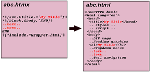

The web page files I write obtain content from a source file that gets headings, navigation, and page layout from a wrapper file. This division accomplishes several goals:
- it avoids common mistakes and malformed pages by making it less likely to break the page structure while editing,
- it puts web page design and layout decisions in include files common to all pages,
- it helps me enlist others in writing articles without burdening them with complex and breakable HTML,
- it lets me improve site design, appearance, performance, and security without rewriting page content

For building medium-sized web sites, a few hundred pages, I use my tool expandfile with wrappers designed for the site to
- Define standard architecture for web pages and the HTML features they will contain.
- Represent kinds of pages as common wrapper templates that specify the formatting and data common to similar pages, with variables representing "holes" to be filled with the details for each page.
- Define the content for each individual page in a source file with *set commands that define values like "title" and a *block command that defines the page's body content. The body content is normal HTML, plus HTMX command invocations and variable references. The last line of each source file is an HTMX command %[*include,=wrappername.htmi]%, which expands the wrapper template. Expanding the wrapper outputs common HTML headings and expands the body block, using variable values set by the source file.
-
An HTMX page template contains
- Comments inside %[** **]% such as copyright notices, dates modified, and dividing lines
- HTMX references to expandfile memory values inside %[ ]% such as %[title]%
- HTMX expressions inside %[* ]% such as %[*set,&title,="Wrappers in expandfile"]% and %[*include,=filename.htmi]%
- HTMX block definitions beginning with %[*block,&blockname,endregex]%
followed by multiple lines of block contents, and ending with a line that matches the regular expression. The content lines are copied into expandfile's memory without expanding them at definition time. Text in the block contents can include HTMX variable references such as %[varname]% and HTMX function invocations such as %[*set,&varname,=value]% -- these references and invocations are expanded when the block is later expanded. - The last line of the page template inserts the expansion of the wrapper with %[*include,=wrappername.htmi]%
-
This scheme obtains the following results:
- One source file for each website file.
- Source files can be edited with any text editor.
- Source files can be operated on by standard Unix tools, source control, make, grep, etc.
- Headings, menus, page layout, sidebars, and other boilerplate come from page wrapper files, tailored for the page.
- Content changes are less likely to break a whole page by accident.
- No database is accessed to create the page content: my local file system is the database.
- The resulting object pages are static HTML that a web server can display without computation or database calls.
- A change to a wrapper can be reflected in all pages derived from it by re-expanding the pages' source.
Additional information on wrappers is available here.
For example,
this structure allowed me to make changes to every HTML page on the multicians.org site to add
<meta name="viewport" content="width=device-width, initial-scale=1">
to every page, by editing one wrapper file and re-expanding all HTMX files to generate HTML pages.
Sample HTMX Page Using Wrappers
Consider this example .htmx file:
%[*set,&title,="example page"]%
%[*set,&description,="Page wrappers."]%
%[*include,=htmxlib.htmi]%
%[** Copyright (c) 2018, Tom Van Vleck **]%
%[** ============================================ **]%
%[*block,&body,^ENDBODY$]%
<p>
This note describes how
<span class="inred">expandfile</span>
can be used to separate web page structure from content.
</p>
ENDBODY
%[*include,=example-page-wrapper.htmi]%
Notes
The example above sets three variables, title, description, and body. The lines in pink are regular HTML that will be in the generated page.
The text inside %[** **]% is commentary. There are two comment lines above. Comment lines expand to nothing in the HTML output.
The *include statements are replaced by the contents of specified .htmi files.
- htmxlib.htmi defines macros that HTMX pages can invoke with *callv. (None are used in this example.)
- example-page-wrapper.htmi outputs the page's HTML, using the contents of variables title, description, and body.
- Expanding a variable whose value contains a %[varname]% construct expands to the included varname's value.
Sample Wrapper
The wrapper below outputs a whole HTML page, starting with an HTML5 DOCTYPE and a HEAD section with LANG specified, and then a BODY section. (I have capitalized keywords HTML, HEAD, and BODY for clarity: browsers accept either case.)
The HEAD section of the wrapper begins with statements used in every page. The wrapper uses the values of the "title" and "description" variables set in each input .htmx file to create HTML "meta" tags in the output .html file, and also outputs a "meta" tag that sets a viewport so the page looks better on mobile devices. The HEAD section also sets up the CSS definitions for the page, outputting a link to an external style sheet, and then providing some page-local definitions. If "extrastyle" or "extratail" blocks were defined in the HTMX file, they would be included in the resulting HTML file.
The BODY section of the wrapper can include standard design elements for headings. Wrappers for multicians.org provide dropdown menus, standard breadcrumb navigation, and additional mobile-sensitive code to all pages on the site, as described in Multics Website Features. The DIVs with CLASS "outer", "main", and "tail" can be formatted and positioned by CSS declarations in the page's style sheet.
Here is example-page-wrapper.htmi:
%[** template for an example web page **]%
%[** parameters: **]%
%[** title - attribute in head **]%
%[** description - in head **]%
%[** keywords - in head **]%
%[** minwidth, maxwidth, contentwidth - from config.txt**]%
%[** **]%
%[** includes: **]%
%[** stdfmt.htmi **]%
%[** textnav.htmi **]%
%[** addrtag.htmi **]%
%[** **]%
%[** blocks: **]%
%[** body - standard body, can contain vars, macros, etc **]%
%[** extrabodytag - extra attributes appended to BODY tag **]%
%[** extrastyle - extra heading stuff, added to head **]%
%[** extratail - extra tail links **]%
%[** Copyright (c) 1994-2017, Tom Van Vleck **]%
%[** ================================================================ **]%
<!DOCTYPE html>
<HTML lang="en">
<HEAD>
<meta http-equiv="Content-Type" content="text/html; charset=utf-8">
<title>%[title]%</title>
<meta name="description" content="%[description]%">
<meta name="keywords" content="%[keywords]%">
<meta name="viewport" content="width=device-width, initial-scale=1">
<link rel="stylesheet" type="text/css" href="mystyle.css">
%[*include,=stdfmt.htmi]%
<style type="text/css">
.outer {
min-width: %[minwidth]%px; max-width: %[maxwidth]%px;
width: auto !important; width: %[contentwidth]%px; margin: 0px auto;
}
</style>
%[*expand,extrastyle]%
</HEAD>
<BODY%[*callv,wrap,extrabodytag,=" ",=""]%>
<div class="outer">
<div class="main">
%[*expand,body]%
<div class="tail">
%[*expand,extratail]%
<div class="tailnavbar">
<div class="textnav">
%[*include,=textnav.htmi]%
</div> <!-- textnav -->
</div> <!-- tailnavbar -->
%[*include,=addrtag.htmi]%
</div> <!-- tail -->
</div> <!-- main -->
</div> <!-- outer -->
</BODY>
</HTML>
The %[*expand,body]% statement will be replaced by the expansion of the user-provided contents of the body block defined in the .htmx file. Variable references in the body block will be further expanded.
Notes
This wrapper is a simplified version of the one I use for multicians.org. It looks for some optional variables that not all .htmx files set, such as extrabody. (Unset variables are replaced by nothing.) The example page does not set these.
Most of the layout options for the generated HTML file come from the common CSS style sheet file mxstyle.css and three include files:
- stdfmt.htmi - this file contains CSS specifications for the look and feel of all pages generated by the wrapper. It defines the colors and layout for CSS classes like main and tailnavbar. If every page produced from example-page-wrapper.htmi uses JavaScript navigation menus, this machinery can be defined once in stdfmt.htmi.
- textnav.htmi - this file creates HTML links to other pages on the site.
- addrtag.htmi - this file creates a link for contacting the site maintainer.
This wrapper looks for some other data items that an .htmx file can define to provide extra per-page features.
- extrastyle - if an .htmx file needs extra definitions in its CSS block, or extra JavaScript files included, add them to an extrastyle block. Similarly, if an extra notice should be added to the botom of the page, define a block named extratail. (I use the extratail for the "Next Story" link on Multics Stories.)
-
extrabodytag - If you load some JavaScript functions into the page, you may need to generate an initialization call when the page is loaded.
You might say something like
%[*set,&extrabodytag,="onload=\"show_calendar(window.location.search, 'calcontent')\""]% - extratail - each generated HTML file generates some navigation links to other pages on the site. For example, the Multics Glossary pages for each letter have links to the next letter, and links to the Glossary index. "Multics Stories" files have a link to the next story in sequence. These links help visitors find related pages, and help search engines find a path to every page.
CSS Usage
One of the major benefits of the wrapper approach appears when a site's pages use CSS (Cascading Style Sheets) for formatting. (I still have much to learn about CSS -- the features of my pages are ones I've seen on other sites, or read about in how-to articles.)
CSS separates the structure of a page's information from the specs for formatting it. Formatting rules in STYLE sections of the HEAD of a page, and in .css style sheet files included by the page, specify how elements will be arranged and displayed. The rules declare which elements in the BODY they apply to by matching on the declared CLASS and ID of elements, and matching sequences of HTML tags.
The multicians.org wrappers obtain CSS declarations from the wrapper and from files that the wrapper includes; individual HTMX files can contain additional blocks like extrastyle that the wrapper includes if they are found, and these may contain more CSS STYLE tags as well as *include calls that cause more CSS to be included inline. The standard style sheet file mxstyle.css is included by every HTML file on the site, and then those rules are extended or overridden by CSS specs in individual files.
Wrappers encapsulate the CSS solutions for several design issues:
Fluid Design
Fluid design of a web page ensures that visitors' browsers display pages well on screens of various sizes. This goal implies that a page will be readable on a huge monitor as well as a smartphone screen. One part of this approach is to declare the widths of page elements as fractions of screen width, rather than specific counts of pixels. The "outer" and "main" classes in the example above are used in multicians.org's fluid layout.
(Laying out pages using TABLE elements was a fad in the 90s, now deprecated. Among other problems, using tables with a fixed width cuts off content on a screen smaller than the table width.)
Adaptive Design
Adaptive design of a page tells a web browser to switch between different CSS layouts depending on the screen size: a site may use a completely different layout for different screen sizes. For example, the wrappers for multicians.org switch between two different ways of displaying the navigation menus: drop-down menus are only used on large enough screens.
The result of a CSS media query is compared to a configured constant, and one menu presentation is hidden and the other un-hidden depending on the result.
For example, the statements
.altmenubar {display: none;}
@media (max-width: 600px) {
.redmenubar {display: none;}
.altmenubar {display: block; margin: 9px 5px 0 5px;}
.main {margin-top: 0; padding: 5px 5px 5px 5px;}
}
make the altmenubar DIV (normally invisible) visible, and hide the redmenubar DIV, if the screen display is less than 600 CSS pixels wide. The altmenubar DIV is a simple menu without dropdowns that works better on small screens. For narrow screens, the @media section also changes the margins on other DIVs.
Since smartphones don't support HOVER attributes, some adaptive sites change their navigation elements to provide additional methods to find pages for smartphone users. Some sites replace complex menu bars with a "hamburger menu" that opens simpler navigation, when the screen is small.
The "altmenubar" for multicians.org shows only the text "MENU" in a red bar: clicking that text toggles a hidden checkbox, which toggles the hiding/showing of a panel with 27 text links, compared to the 53 links in the JavaScript drop-down menus.
Responsive Design
Responsive design uses newer features of HTML to tell the visitor's browser to request different images depending on the number of pixels available, by using the SRCSET element in an IMG tag. Expandfile macros in htmxlib.htmi generate IMG tags with SRCSET if multiple media sizes are found at compile time.
Responsive Design can also use CSS Media Queries to determine the screen size and to calculate the widths of individual sections and elements.
(see High DPI Pictures for an example of use.)